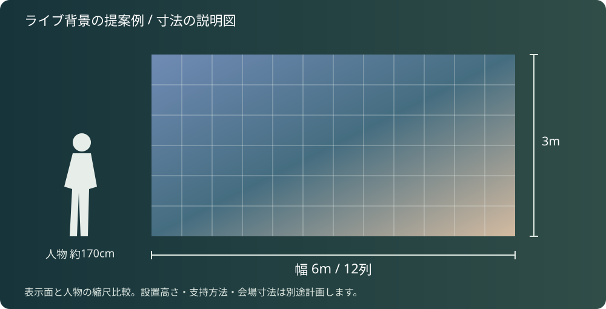

どんな形にしたい？
平面・内側へ曲がる画面など、見せたい形と寸法を共有。
LED ↗EQUIPMENT / 07
曲面LEDパネル
平面だけでなく、空間を包む曲面へ。
KEY SPECIFICATIONS
 画像を大きく見る ＋
画像を大きく見る ＋01 / ROLE & FLOW
役割を表す説明図です。実際の配線・端子構成は案件に合わせて決めます。
STAGE IDEA
横に広がる映像を、ステージの背景として見せる平面構成の提案例です。曲面にする場合は、角度と専用部材を別に計画します。

寸法図を拡大 ↗映像を出すPC・再生機、パネルに適合するLEDプロセッサー、必要な信号ケーブル・電源分配、指定の支持部材を組み合わせます。切り替える映像が複数ある場合はスイッチャーも検討します。
画面の下端高さ、客席からの距離、搬入経路、背面の作業スペースを合わせて計画します。吊り・自立の可否や重り・電源の容量は、この寸法例だけでは決めません。
計算：1枚500×500mm・192×192画素。横12枚×縦6枚の平面例です。機材の在庫や会場での設置可否を示すものではありません。
02 / BEFORE YOUR BRIEF
平面・内側へ曲がる画面など、見せたい形と寸法を共有。
客席や通路との距離、文字・人物など主な映像内容を整理。
吊りか自立か、会場の高さと背面スペースを合わせる。
03 / CHOOSING THE RIGHT TOOL
ステージの背景や展示空間で、曲面の映像面を検討する用途に。500mm角のパネルを組み合わせて表示領域を作ります。
外側へ膨らむ凸曲面は、メーカー資料では特注パネルの条件です。形状だけで標準品と同じ構成に決めず、パネル仕様と専用部材を合わせます。
2024年1月22日のRuby-C 2.6資料に基づく紹介です。Ruby-C 2.3など別ピッチとは表示画素数が異なります。吊り・自立の構成、固定部材、床・吊り元の条件を整えて設置計画を作ります。機材単体の手配と設営・調整の範囲は分けてご案内します。
参考資料：メーカー公式仕様 ↗（2026年11月2日照合）
希望する形と画面寸法、屋内会場、見る距離、吊り／自立の希望、背面スペースをお聞かせください。本体・周辺機材・搬入出・設営・本番操作・撤去を分けて、必要な範囲を整理します。セットの付属品や人員が自動で含まれる表示ではありません。
04 / RELATED EQUIPMENT